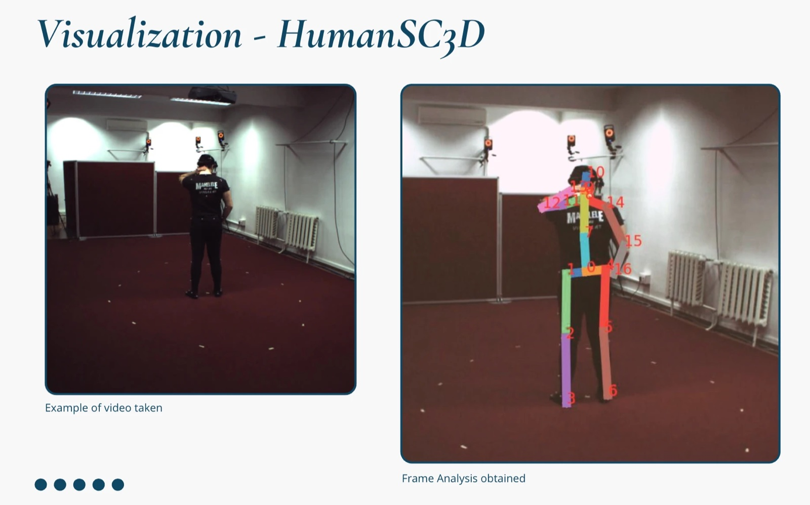

LCN-Pose
3D human pose estimation with Locally Connected Networks, a paper from ICCV 2019. Its code no longer ran, so we brought it up to date and checked whether the results still hold.
- Role
- Developer, team of 2
- When
- 2025
- Context
- Machine Learning for Vision and Multimedia, Politecnico di Torino
- Stack
- TensorFlow 2.13, CUDA, NumPy, Kaggle

Overview
The authors released TensorFlow code in 2019, and it didn't run on today's libraries or GPUs. We ported it to TensorFlow 2.13 and wrote new data loaders for Human3.6M, HumanSC3D and MPII. Then we added scripts for training, evaluation, inference and hyperparameter search.
Evaluation covers both standard protocols: MPJPE, and MPJPE after Procrustes alignment. We also added flip, rotation and translation augmentation, and a viewer that draws the predicted skeleton on HumanSC3D frames.
Results
On Human3.6M, HumanSC3D and MPII we got 35.5 mm MPJPE. The paper reports 32.5 mm, so we came close without matching it.